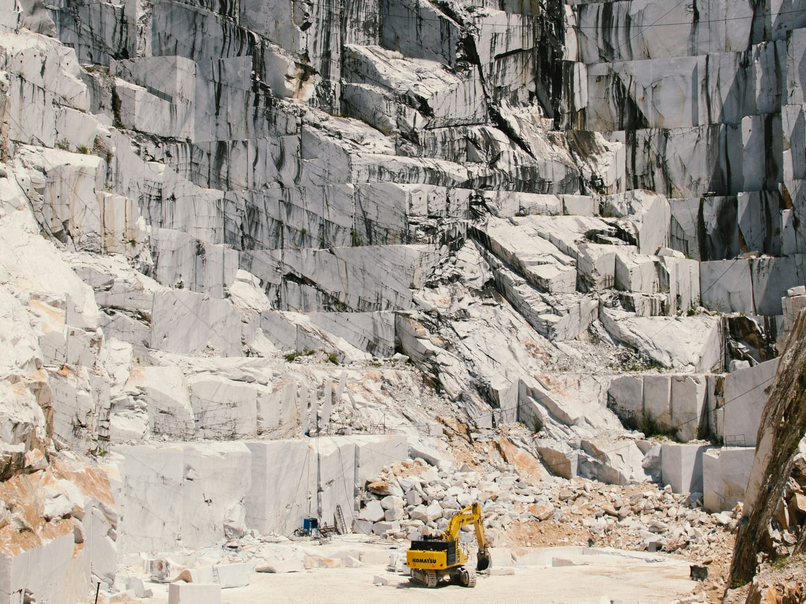
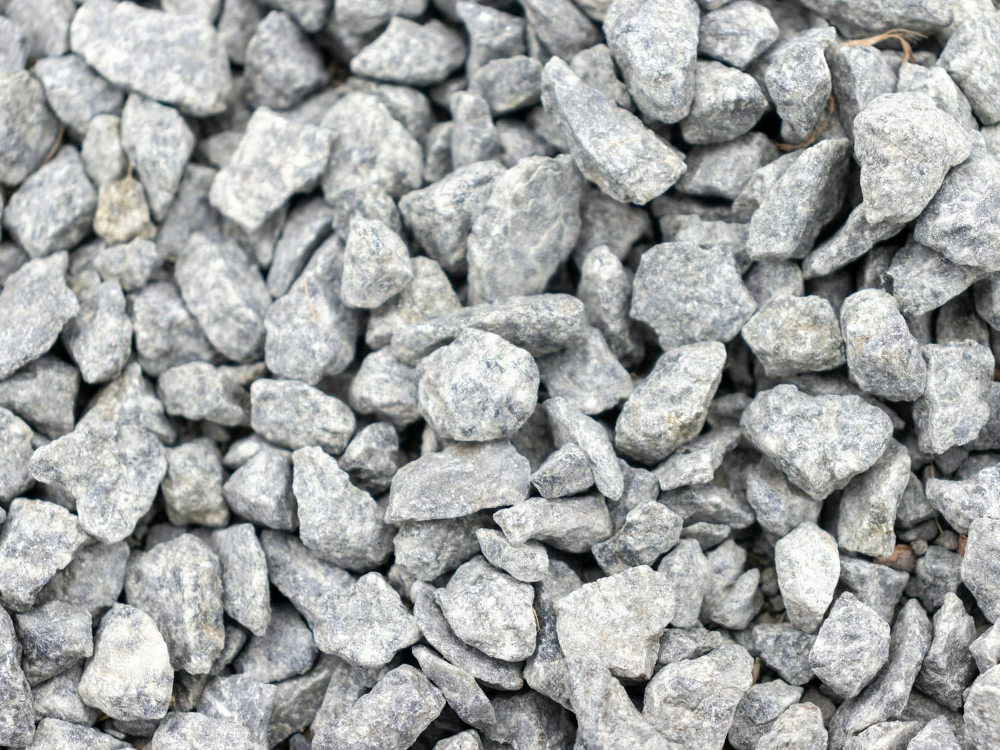
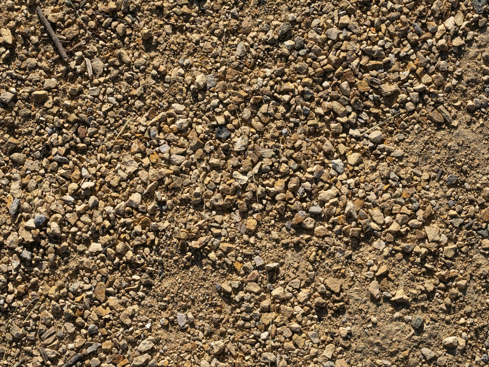
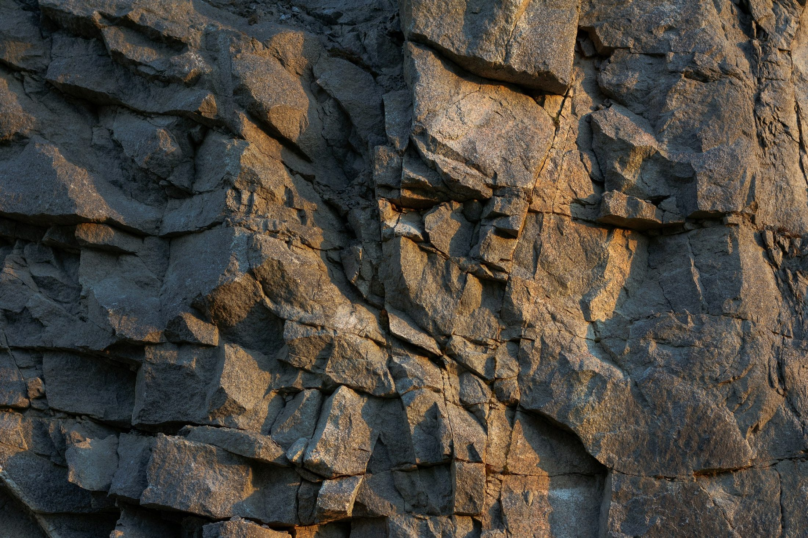
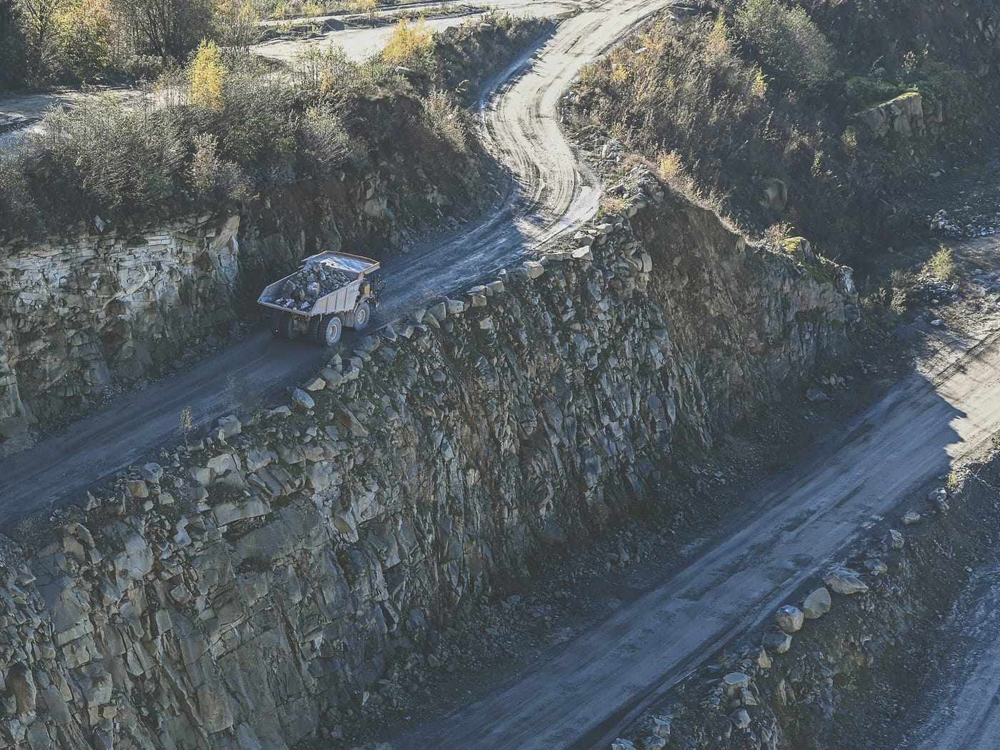
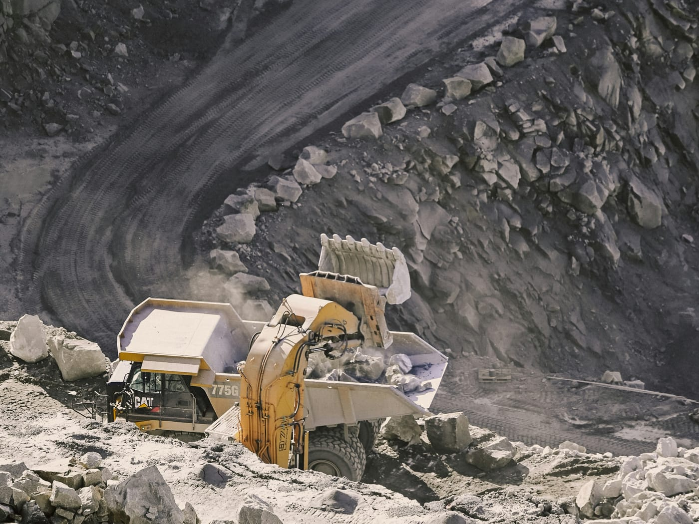
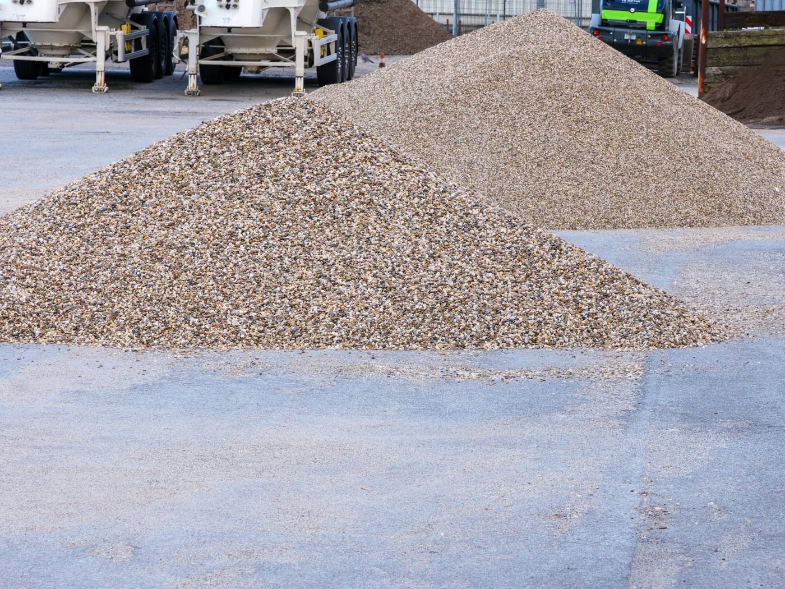

BUSINESS
체계적인 생산 공정으로
건설의 기초를 공급합니다
체계적인 생산 공정을 토대로 석재 채굴부터 쇄석 생산 및 샌드와 골재를 공급합니다. 2024년 5월 성주 채석단지로 지정되었습니다(경상북도고시 제2024–180호).

QUARRY성주 채석단지경상북도 성주군 초전면
PRODUCTS
생산품목
01샌드
0213mm 골재
0319mm 골재
0425mm 골재
0540mm 골재
0640mm 혼합골재
07게비온석

AGGREGATE골재13 · 19 · 25 · 40mm, 40mm 혼합골재

SAND샌드생산품목
PROCESS
생산 과정
골재 생산의 일반적인 흐름입니다.

01
채석
암반을 단계적으로 채석해 원석을 확보합니다.

02
운반
채석한 원석을 덤프트럭으로 파쇄 설비까지 옮깁니다.

03
파쇄·선별
원석을 잘게 깨고 크기별로 골라냅니다.

04
적치·출하
규격별로 쌓아 두었다가 건설 현장으로 출하합니다.